DCA: Software Tutorial
Below we will walk through how to perform decision curve analysis for binary and time-to-event outcomes using R, Stata, SAS, and Python. Code is provided for all languages and can be downloaded or simply copy and pasted into your application to see how it runs. For simplicity’s sake, however, we only show output from the R functions; although, naturally, output is very similar irrespective of programming language. .
Install & Load
Use the scripts below to install the decision curve analysis functions and/or load them for use.
R
# install dcurves to perform DCA from CRAN
install.packages("dcurves")
# install other packages used in this tutorial
install.packages(
c(
"tidyverse", "survival", "gt", "broom",
"gtsummary", "rsample", "labelled"
)
)
# load packages
library(dcurves)
library(tidyverse)
library(gtsummary)Stata
* install dca functions from GitHub.com
net install dca, from("https://raw.github.com/ddsjoberg/dca.stata/master/") replaceSAS
/* source the dca macros from GitHub.com */
/* you can also navigate to GitHub.com and save the macros locally */
FILENAME dca URL "https://raw.githubusercontent.com/ddsjoberg/dca.sas/main/dca.sas";
FILENAME stdca URL "https://raw.githubusercontent.com/ddsjoberg/dca.sas/main/stdca.sas";
%INCLUDE dca;
%INCLUDE stdca;Python
# install dcurves to perform DCA (first install package via pip)
# pip install dcurves
from dcurves import dca, plot_graphs
# install other packages used in this tutorial
# pip install pandas numpy statsmodels lifelines
import pandas as pd
import numpy as np
import statsmodels.api as sm
import lifelinesBinary Outcomes
Motivating Example
We will be working with an example data set containing information about cancer diagnosis. The data set includes information on 750 patients who have recently discovered they have a gene mutation that puts them at a higher risk for harboring cancer. Each patient has been biopsied and we know their cancer status. It is known that older patients with a family history of cancer have a higher probability of harboring cancer. A clinical chemist has recently discovered a marker that she believes can distinguish between patients with and without cancer. We wish to assess whether or not the new marker does indeed distinguish between patients with and without cancer. If the marker does indeed predict well, many patients will not need to undergo a painful biopsy.
Data Set-up
We will go through step by step how to import your data, build models based on multiple variables, and use those models to obtain predicted probabilities. The first step is to import your data, label the variables and produce a table of summary statistics. The second step is you’ll want to begin building your model. As we have a binary outcome (i.e. the outcome of our model has two levels: cancer or no cancer), we will be using a logistic regression model.
R
# import data
df_cancer_dx <-
readr::read_csv(
file = "https://raw.githubusercontent.com/ddsjoberg/dca-tutorial/main/data/df_cancer_dx.csv"
) %>%
# assign variable labels. these labels will be carried through in the `dca()` output
labelled::set_variable_labels(
patientid = "Patient ID",
cancer = "Cancer Diagnosis",
risk_group = "Risk Group",
age = "Patient Age",
famhistory = "Family History",
marker = "Marker",
cancerpredmarker = "Prediction Model"
)
# summarize data
df_cancer_dx %>%
select(-patientid) %>%
tbl_summary(type = all_dichotomous() ~ "categorical")Stata
* import data
import delimited "https://raw.githubusercontent.com/ddsjoberg/dca-tutorial/main/data/df_cancer_dx.csv", clear
* assign variable labels. these labels will be carried through in the DCA output
label variable patientid "Patient ID"
label variable cancer "Cancer Diagnosis"
label variable risk_group "Risk Group"
label variable age "Patient Age"
label variable famhistory "Family History"
label variable marker "Marker"
label variable cancerpredmarker "Prediction Model"SAS
FILENAME cancer URL "https://raw.githubusercontent.com/ddsjoberg/dca-tutorial/main/data/df_cancer_dx.csv";
PROC IMPORT FILE = cancer OUT = work.data_cancer DBMS = CSV;
RUN;
* assign variable labels. these labels will be carried through in the DCA output;
DATA data_cancer;
SET data_cancer;
LABEL patientid = "Patient ID"
cancer = "Cancer Diagnosis"
risk_group = "Risk Group"
age = "Patient Age"
famhistory = "Family History"
marker = "Marker"
cancerpredmarker = "Prediction Model";
RUN;Python
# No table for this chunk
df_cancer_dx = pd.read_csv(
"https://raw.githubusercontent.com/ddsjoberg/dca-tutorial/main/data/df_cancer_dx.csv"
)| Characteristic | N = 7501 |
|---|---|
| Cancer Diagnosis | |
| 0 | 645 (86%) |
| 1 | 105 (14%) |
| Risk Group | |
| high | 21 (2.8%) |
| intermediate | 335 (45%) |
| low | 394 (53%) |
| Patient Age | 65.1 (61.7, 68.3) |
| Family History | |
| 0 | 635 (85%) |
| 1 | 115 (15%) |
| Marker | 0.64 (0.29, 1.38) |
| Prediction Model | 0.06 (0.02, 0.18) |
| 1 n (%); Median (Q1, Q3) | |
Univariate Decision Curve Analysis
First, we want to confirm family history of cancer is indeed associated with the biopsy result.
R
# build logistic regression model
mod1 <- glm(cancer ~ famhistory, data = df_cancer_dx, family = binomial)
# model summary
mod1_summary <- tbl_regression(mod1, exponentiate = TRUE)
mod1_summaryStata
* Test whether family history is associated with cancer
logit cancer famhistorySAS
* Test whether family history is associated with cancer;
PROC LOGISTIC DATA = data_cancer DESCENDING;
MODEL cancer = famhistory;
RUN;Python
mod1 = sm.GLM.from_formula(
"cancer ~ famhistory", data=df_cancer_dx, family=sm.families.Binomial()
)
mod1_results = mod1.fit()
print(mod1_results.summary())| Characteristic | OR | 95% CI | p-value |
|---|---|---|---|
| Family History | 1.80 | 1.07, 2.96 | 0.022 |
| Abbreviations: CI = Confidence Interval, OR = Odds Ratio | |||
Via logistic regression with cancer as the outcome, we can see that family history is related to biopsy outcome with odds ratio 2.32 (95% CI: 1.44, 3.71; p<0.001). The decision curve analysis can help us address the clinical utility of using family history to predict biopsy outcome.
R
dca(cancer ~ famhistory, data = df_cancer_dx) Stata
* Run the decision curve: family history is coded as 0 or 1, i.e. a probability
* so no need to specify the "probability" option
dca cancer famhistorySAS
* Run the decision curve: family history is coded as 0 or 1, i.e. a probability, so no need to specify the "probability" option;
%DCA(data = data_cancer, outcome = cancer, predictors = famhistory, graph = yes);Python
dca_famhistory_df = dca(data=df_cancer_dx, outcome="cancer", modelnames=["famhistory"])
plot_graphs(plot_df=dca_famhistory_df, graph_type="net_benefit", y_limits=[-0.05, 0.2])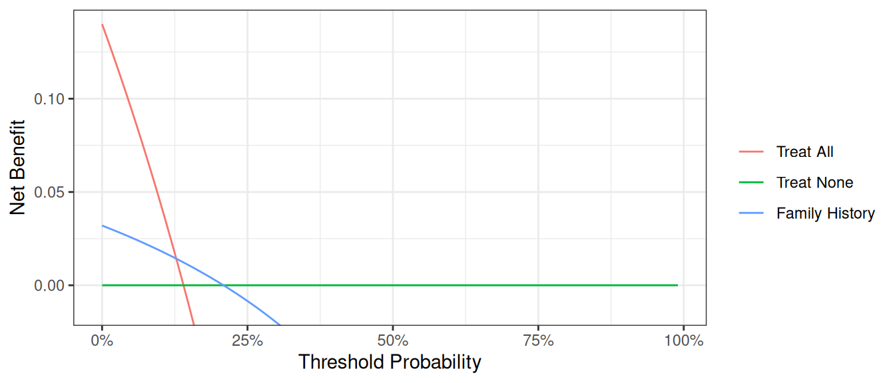
First, note that there are many threshold probabilities shown here that are not of interest. For example, it is unlikely that a patient would demand that they had at least a 50% risk of cancer before they would accept a biopsy. Let’s do the decision curve analysis again, this time restricting the output to threshold probabilities a more clinically reasonable range. We think it would be not make sense if a patient opted for biopsy if their risk of cancer was less than 5%; similarly, it would be irrational not to get a biopsy if risk was above 35%. So we want to look at the range between 5% and 35%. Because 5% is pretty close to 0%, we will show the range between 0% and 35%.
R
dca(cancer ~ famhistory,
data = df_cancer_dx,
thresholds = seq(0, 0.35, 0.01)
)Stata
dca cancer famhistory, xstop(0.35) xlabel(0(0.05)0.35)SAS
%DCA(data = data_cancer, outcome = cancer, predictors = famhistory, graph = yes, xstop = 0.35);Python
dca_famhistory2_df = dca(
data=df_cancer_dx,
outcome="cancer",
modelnames=["famhistory"],
thresholds=np.arange(0, 0.36, 0.01),
)
plot_graphs(plot_df=dca_famhistory2_df, graph_type="net_benefit", y_limits=[-0.05, 0.2])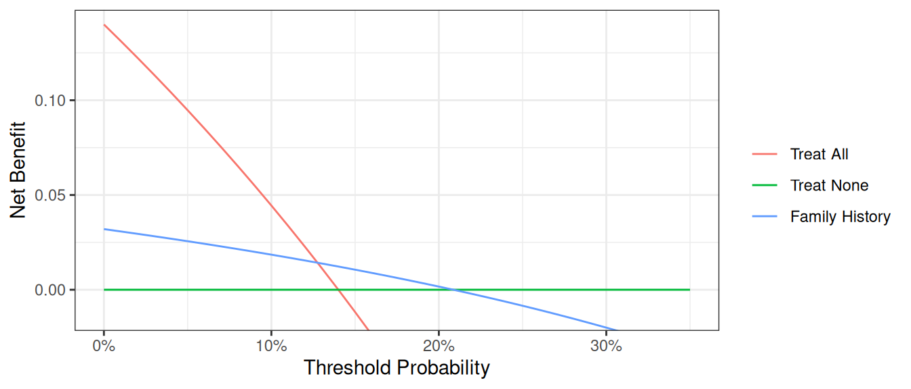
Now that the graph is showing a more reasonable range of threshold probabilities, let’s assess the clinical utility of family history alone. We can see here that although family history is significantly associated with biopsy outcome, it only adds value to a small range of threshold probabilities near 13% - 20%. If your personal threshold probability is 15% (i.e. you would only undergo a biopsy if your probability of cancer was 15% or more), then family history alone can be beneficial in making the decision to undergo biopsy. However, if your threshold probability is less than 13% or higher than 20%, then using family history to decide on biopsy has less benefit than choosing to biopsy or not biopsy respectively. Hence, we would conclude that using family history to determine who to biopsy would help some patients but harm some others, and so should not be used in the clinic.
Multivariable Decision Curve Analysis
Evaluation of New Models
We want to examine the value of a statistical model that incorporates family history, age, and the marker. First, we will build the logistic regression model with all three variables, and then save the predicted probability of having cancer based on the model. Note that in our example data set, this variable actually already exists so it wouldn’t be necessary to create the predicted probabilities once again.
R
# build multivariable logistic regression model
mod2 <- glm(cancer ~ marker + age + famhistory, data = df_cancer_dx, family = binomial)
# summarize model
tbl_regression(mod2, exponentiate = TRUE)
# add predicted values from model to data set
df_cancer_dx <-
df_cancer_dx %>%
mutate(
cancerpredmarker =
broom::augment(mod2, type.predict = "response") %>%
pull(".fitted")
)Stata
* run the multivariable model
logit cancer marker age famhistory
* save out predictions in the form of probabilities
capture drop cancerpredmarker
predict cancerpredmarkerSAS
* run the multivariable model;
PROC LOGISTIC DATA = data_cancer DESCENDING;
MODEL cancer = marker age famhistory;
* save out predictions in the form of probabilities;
SCORE CLM OUT=dca (RENAME=(P_1 = cancerpredmarker));
RUN;Python
mod2 = sm.GLM.from_formula(
"cancer ~ marker + age + famhistory",
data=df_cancer_dx,
family=sm.families.Binomial(),
)
mod2_results = mod2.fit()
print(mod2_results.summary())
df_cancer_dx["cancerpredmarker"] = mod2_results.predict(df_cancer_dx)| Characteristic | OR | 95% CI | p-value |
|---|---|---|---|
| Marker | 2.66 | 2.12, 3.38 | <0.001 |
| Patient Age | 1.33 | 1.25, 1.41 | <0.001 |
| Family History | 2.38 | 1.29, 4.32 | 0.005 |
| Abbreviations: CI = Confidence Interval, OR = Odds Ratio | |||
We now want to compare our different approaches to cancer detection: biopsying everyone, biopsying no-one, biopsying on the basis of family history, or biopsying on the basis of a multivariable statistical model including the marker, age and family history of cancer.
R
dca(cancer ~ famhistory + cancerpredmarker,
data = df_cancer_dx,
thresholds = seq(0, 0.35, 0.01),
label = list(cancerpredmarker = "Prediction Model")
) %>%
plot(smooth = FALSE)Stata
dca cancer cancerpredmarker famhistory, xstop(0.35) xlabel(0(0.01)0.35)SAS
%DCA(data = data_cancer, outcome = cancer, predictors = cancerpredmarker famhistory, graph = yes, xstop = 0.35);Python
# Run dca on multivariable model
dca_multi_df = dca(
data=df_cancer_dx,
outcome="cancer",
modelnames=["famhistory", "cancerpredmarker"],
thresholds=np.arange(0, 0.36, 0.01),
)
plot_graphs(plot_df=dca_multi_df, y_limits=[-0.05, 0.2], graph_type="net_benefit")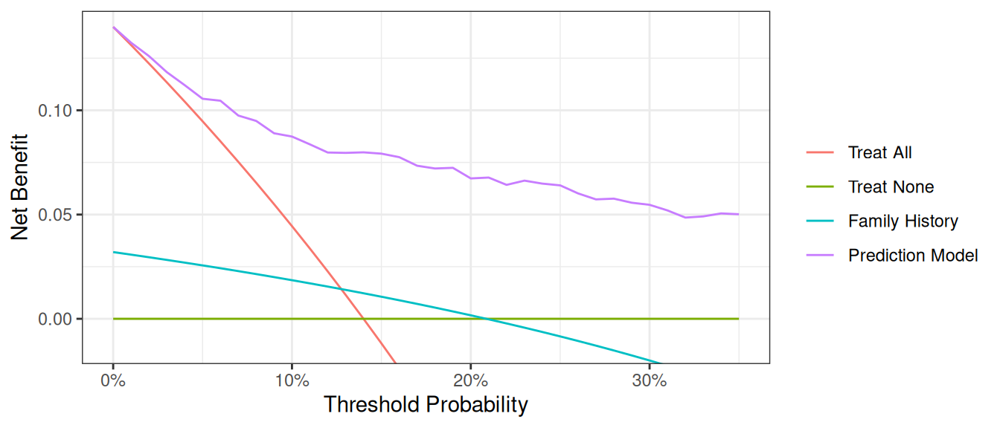
The key aspect of decision curve analysis is to look at which strategy leads to the largest net benefit (i.e. the “highest” line), which in this example would correspond to the model that includes age, family history of cancer, and the marker. It is clear that the statistical model has the highest net benefit across the entire range of threshold probabilities. Accordingly, we would conclude that using the model to decide whether to biopsy a patient would lead to better clinical outcomes.
Graph Appearance Options
There are various options for improving the look of the graph. First, regular graph options apply. You can change line color, width, and patterns, and in this example, the “Treat All” plot shows as a thick, red, solid line, while “Treat None” is of medium thickness, green, and dashed. “Marker” is a thin, blue, dashed line (note: this would not look much good, but is given for illustrative purposes).
R
library(dplyr)
library(ggplot2)
dcurves::dca(
data = df_cancer_dx,
formula = cancer ~ cancerpredmarker,
thresholds = seq(0, 0.25, by = 0.01)
) |>
as_tibble() |>
filter(!is.na(net_benefit)) |>
ggplot(aes(
x = threshold,
y = net_benefit,
color = label,
linetype = label,
size = label
)) +
geom_line() +
ylim(-0.05, 0.15) +
scale_color_manual(values = c("red", "green", "blue")) +
scale_linetype_manual(values = c("solid", "dashed", "dashed")) +
scale_size_manual(values = c(1.5, 1, 0.5)) +
labs(
x = "Threshold Probability",
y = "Net Benefit",
color = "Model",
linetype = "Model",
size = "Model"
) +
theme_minimal()Stata
// Add formatting options to improve graph appearance
dca cancer cancerpredmarker, xstop(0.25) lcolor(red green blue) lwidth(thick medium thin) lpattern(solid dash dot)SAS
/* Add formatting options to improve graph appearance */
%DCA(data = data_cancer, outcome = cancer,
predictors = cancerpredmarker,
xstop = 0.25);
/* Example of custom plot formatting using PROC SGPLOT */
PROC SGPLOT DATA = dca;
SERIES X = threshold Y = all / LINEATTRS = (COLOR = red THICKNESS = 3 PATTERN = solid) NAME = "all";
SERIES X = threshold Y = none / LINEATTRS = (COLOR = green THICKNESS = 2 PATTERN = dash) NAME = "none";
SERIES X = threshold Y = cancerpredmarker / LINEATTRS = (COLOR = blue THICKNESS = 1 PATTERN = dot) NAME = "marker";
XAXIS LABEL = "Threshold Probability" VALUES = (0 to 0.25 by 0.05);
YAXIS LABEL = "Net Benefit";
KEYLEGEND "all" "none" "marker" / TITLE = "";
RUN;Python
dca_formatting_df = dca(
data=df_cancer_dx,
outcome="cancer",
modelnames=["cancerpredmarker"],
thresholds=np.arange(0, 0.26, 0.01),
)
plot_graphs(
plot_df=dca_formatting_df,
graph_type="net_benefit",
y_limits=[-0.05, 0.15],
color_names=["blue", "red", "green"],
linestyles=["--", "-", "--"],
linewidths=[0.75, 3, 2],
)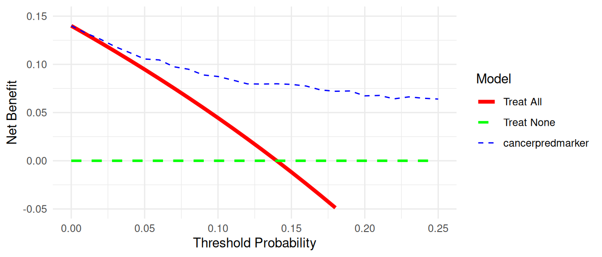
Second, the legend can be switched on – useful for initial evaluation – and off - better for producing publication-ready figures. The default (shown in all the examples above) is to include the legend. To avoid showing the legend:
R
# Turn off the legend for a cleaner publication-ready figure
dcurves::dca(
data = df_cancer_dx,
formula = cancer ~ cancerpredmarker + famhistory,
thresholds = seq(0, 0.35, by = 0.01)
) |>
plot() +
theme(legend.position = "none")Stata
// Turn off the legend for a cleaner publication-ready figure
dca cancer cancerpredmarker famhistory, xstop(0.35) xlabel(0(0.05)0.35) legend(off)SAS
/* Turn off the legend for a cleaner publication-ready figure */
%DCA(data = data_cancer, outcome = cancer,
predictors = cancerpredmarker famhistory,
xstop = 0.35);
/* Custom plot with legend turned off */
PROC SGPLOT DATA = dca;
SERIES X = threshold Y = all;
SERIES X = threshold Y = none;
SERIES X = threshold Y = cancerpredmarker;
SERIES X = threshold Y = famhistory;
XAXIS LABEL = "Threshold Probability" VALUES = (0 to 0.35 by 0.05);
YAXIS LABEL = "Net Benefit";
/* No KEYLEGEND statement means no legend will be displayed */
RUN;Python
# Turn off the legend for a cleaner publication-ready figure
dca_legend_off_df = dca(
data=df_cancer_dx,
outcome="cancer",
modelnames=["cancerpredmarker"],
thresholds=np.arange(0, 0.26, 0.01),
)
plot_graphs(
plot_df=dca_legend_off_df,
graph_type="net_benefit",
y_limits=[-0.05, 0.15],
color_names=["blue", "red", "green"],
linestyles=["--", "-", "--"],
linewidths=[0.75, 3, 2],
show_legend=False,
)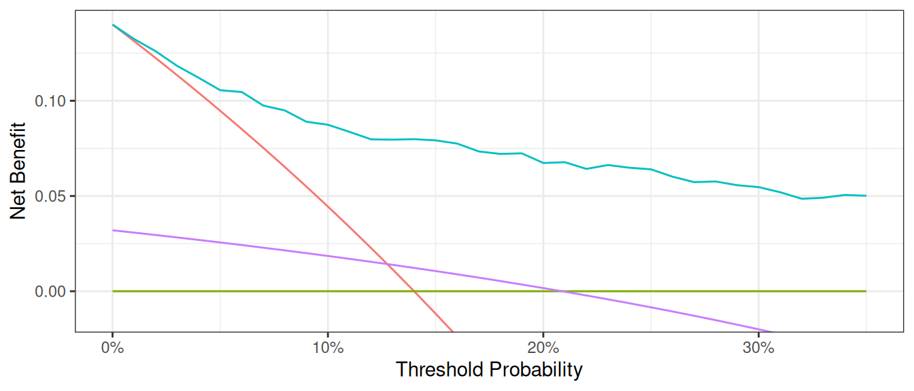
Finally, it can sometimes be important to modify the y axis, especially when event rates – and therefore net benefit – is low. We will demonstrate by first creating a data set where the incidence of cancer is 90% lower than in the original data set. Running a decision curve ends up with a large amount of white space where net benefit is less than 0, which is uninteresting.
R
set.seed(123)
df_cancer_dx_low <-
df_cancer_dx %>%
mutate(
cancer_temp = if_else(
cancer == 1 & runif(n()) < 0.9, # 90 % of cancers → NA
NA_real_,
cancer
)
) %>%
drop_na(cancer_temp, cancerpredmarker) # remove rows missing in *either* field
dca(
cancer_temp ~ cancerpredmarker,
data = df_cancer_dx_low,
thresholds = seq(0, 0.25, 0.01)
)Stata
// Create a dataset with lower incidence of cancer
set seed 123
g cancer_temp = cancer
replace cancer_temp=. if cancer==1 & uniform()<.9
dca cancer_temp cancerpredmarker, xstop(0.25) xlabel(0(0.05)0.25)SAS
/* Create a dataset with lower incidence of cancer */
DATA data_cancer_low;
SET data_cancer;
CALL STREAMINIT(123); /* Set seed for reproducibility */
/* Keep only 10% of cancer cases */
IF cancer = 1 THEN DO;
IF RAND("UNIFORM") < 0.1 THEN cancer_temp = 1;
ELSE cancer_temp = .;
END;
ELSE cancer_temp = cancer;
RUN;
/* Run DCA with default y-axis */
%DCA(data = data_cancer_low, outcome = cancer_temp,
predictors = cancerpredmarker,
xstop = 0.25);Python
np.random.seed(123)
df_cancer_dx_low = df_cancer_dx.copy()
u = np.random.rand(len(df_cancer_dx_low))
# copy → cancer_temp, then blank out 90 % of cancers
df_cancer_dx_low["cancer_temp"] = df_cancer_dx_low["cancer"]
mask_na = (df_cancer_dx_low["cancer"] == 1) & (u < 0.9)
df_cancer_dx_low.loc[mask_na, "cancer_temp"] = np.nan
# drop rows missing in *either* outcome or predictor
df_for_dca = df_cancer_dx_low.dropna(subset=["cancer_temp", "cancerpredmarker"])
dca_low_incidence_df = dca(
data=df_for_dca,
outcome="cancer_temp",
modelnames=["cancerpredmarker"],
thresholds=np.arange(0, 0.26, 0.01),
)
plot_graphs(
plot_df=dca_low_incidence_df,
graph_type="net_benefit",
color_names=["blue", "red", "green"],
)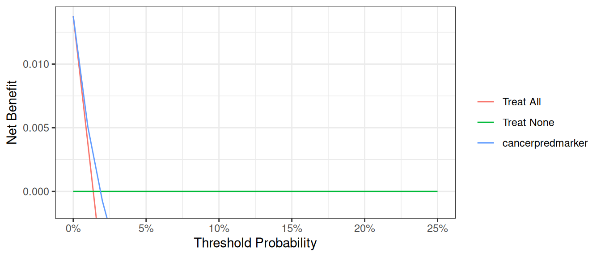
A better alternative would be to use an option that truncates the y-axis. We can also truncate the x-axis on the grounds that net benefit is below zero for threshold probabilities above 0.1.
R
dca(
cancer_temp ~ cancerpredmarker,
data = df_cancer_dx_low,
thresholds = seq(0, 0.04, 0.01)
)Stata
// Adjust both x and y axes for better visualization
dca cancer_temp cancerpredmarker, xstop(0.1) ymin(-0.005) xlabel(0(0.02)0.1) ylabel(-0.005(0.01)0.05)SAS
/* Adjust both x and y axes for better visualization */
%DCA(data = data_cancer_low, outcome = cancer_temp,
predictors = cancerpredmarker,
xstop = 0.1);
/* Custom plot with adjusted axes */
PROC SGPLOT DATA = dca;
SERIES X = threshold Y = all;
SERIES X = threshold Y = none;
SERIES X = threshold Y = cancerpredmarker;
XAXIS LABEL = "Threshold Probability" VALUES = (0 to 0.1 by 0.02);
YAXIS LABEL = "Net Benefit" MIN = -0.005 MAX = 0.05;
RUN;Python
dca_low_incidence_small = dca(
data=df_for_dca,
outcome="cancer_temp",
modelnames=["cancerpredmarker"],
thresholds=np.arange(0, 0.05, 0.01),
)
plot_graphs(
plot_df=dca_low_incidence_small,
graph_type="net_benefit",
y_limits=[-0.005, 0.0225],
color_names=["blue", "red", "green"],
)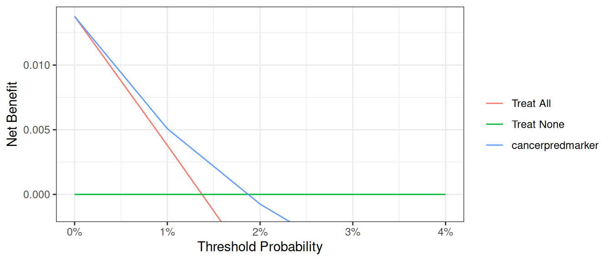
Smoothing Options
The decision curve for the model should in theory be a smooth curve with net benefit always going down (or staying the same) as you move from left to right. But the curve is a bit bumpy and sometimes even increases a bit, a result of statistical noise. Some researchers prefer to show a smoothed curve and there are two options for doing so. First, you can add a smoother. Note that different programs use different smoothers as there is no one smoother that is best in every situation. As such, results of a smoothed curve should always be compared with the unsmoothed curve to ensure that it gives a fair representation of the data.
R
dca(cancer ~ famhistory + cancerpredmarker,
data = df_cancer_dx,
thresholds = seq(0, 0.35, 0.01),
label = list(cancerpredmarker = "Prediction Model")
) %>%
plot(smooth = TRUE)Stata
dca cancer cancerpredmarker famhistory, xstop(0.35) xlabel(0(0.01)0.35) smoothSAS
%DCA(data = data_cancer, outcome = cancer, predictors = cancerpredmarker famhistory, graph = yes, xstop = 0.35, smooth=yes);Python
plot_graphs(
plot_df=dca_multi_df,
y_limits=[-0.025, 0.15],
graph_type="net_benefit",
smooth_frac=0.5, # Set the smoothing fraction to 0.5
)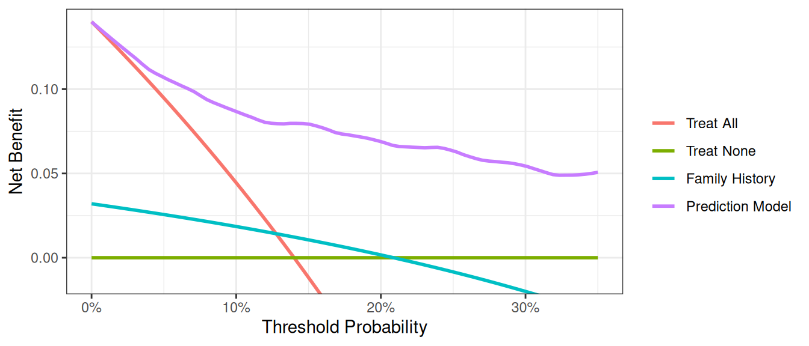
An alternative is to calculate net benefit at wider intervals. By default, the software calculates net benefit at every 1% of threshold probability, but we this can cause artifacts unless the data set is very large. You can specify instead to calculate net benefit every 5%.
R
dcurves::dca(
data = df_cancer_dx,
formula = cancer ~ cancerpredmarker + famhistory + risk_group,
thresholds = seq(0, 0.35, by = 0.05),
as_probability = "risk_group"
)Stata
dca cancer cancerpredmarker famhistory risk_group, xstop(0.35) xby(0.05) probability(no risk_group)SAS
%DCA(data = data_cancer, outcome = cancer,
predictors = cancerpredmarker famhistory risk_group,
probability = no risk_group,
xby = 0.05, xstop = 0.35);Python
dca_smooth2_df = dca(
data=df_cancer_dx,
outcome="cancer",
modelnames=["cancerpredmarker", "famhistory", "risk_group"],
thresholds=np.arange(0, 0.36, 0.05),
models_to_prob=["risk_group"], # Specify risk_group is not a probability
)
plot_graphs(
plot_df=dca_smooth2_df,
graph_type="net_benefit",
smooth_frac=0,
y_limits=[-0.025, 0.15],
)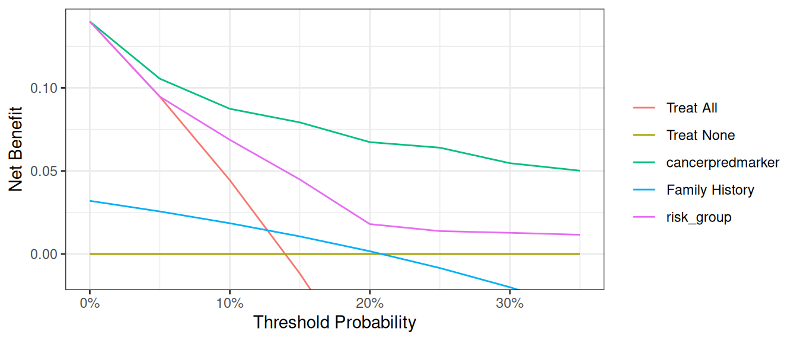
A few additional points are worth noting. First, look at the green line, the net benefit for “treat all”, that is, biopsy everyone. This crosses the y axis at the prevalence. Imagine that a man had a risk threshold of 14%, and asked his risk under the “biopsy all” strategy. He would be told that his risk was the prevalence (14%) and so would be undecided about whether to biopsy or not. When a patient’s risk threshold is the same as his predicted risk, the net benefit of biopsying and not biopsying are the same.
Second, the decision curve for the binary variable (family history of cancer, the brown line) crosses the “biopsy all men” line at 1 – negative predictive value. Again, this is easily explained: the negative predictive value is 87%, so a patient with no family history of cancer has a probability of disease of 13%; a patient with a threshold probability less than this – for example, a patient who would opt for biopsy even if risk was 10% - should therefore be biopsied even if they had no family history of cancer. The net benefit for a binary variable is equivalent to biopsy no-one at the positive predictive value. This is because for a binary variable, a patient with the characteristic is given a risk at the positive predictive value.
Evaluation of Published Models
Imagine that a model was published by Brown et al. with respect to our cancer biopsy data set. The authors reported a statistical model with coefficients of 0.75 for a positive family history of cancer; 0.26 for each increased year of age, and an intercept of -17.5. To test this formula on our data set:
R
# Use the coefficients from the Brown model
df_cancer_dx <-
df_cancer_dx %>%
mutate(
logodds_brown = 0.75 * famhistory + 0.26 * age - 17.5,
phat_brown = exp(logodds_brown) / (1 + exp(logodds_brown))
)
# Run the decision curve
dca(cancer ~ phat_brown,
data = df_cancer_dx,
thresholds = seq(0, 0.35, 0.01),
label = list(phat_brown = "Brown Model")
) %>%
plot(smooth = TRUE)Stata
* Use the coefficients from the Brown model
g logodds_Brown = 0.75*(famhistory) + 0.26*(age) - 17.5
* Convert to predicted probability
g phat_Brown = invlogit(logodds_Brown)
label var phat_Brown "Risk from Brown Model"
* Run the decision curve
dca cancer phat_Brown, xstop(0.35) xlabel(0(0.05)0.35)SAS
DATA data_cancer;
SET data_cancer;
* use the coefficients from the Brown model;
logodds_Brown = 0.75 * (famhistory) + 0.26 * (age) - 17.5;
* convert to predicted probability;
phat_Brown = exp(logodds_Brown) / (1 + exp(logodds_Brown));
RUN;
* run the decision curve;
%DCA(data = data_cancer, outcome = cancer, predictors = phat_Brown, xstop = 0.35);Python
df_cancer_dx["logodds_brown"] = (
0.75 * df_cancer_dx["famhistory"] + 0.26 * df_cancer_dx["age"] - 17.5
)
df_cancer_dx["phat_brown"] = np.exp(df_cancer_dx["logodds_brown"]) / (
1 + np.exp(df_cancer_dx["logodds_brown"])
)
dca_pub_model_df = dca(
data=df_cancer_dx,
outcome="cancer",
modelnames=["phat_brown"],
thresholds=np.arange(0, 0.36, 0.01),
)
plot_graphs(
plot_df=dca_pub_model_df,
y_limits=[-0.05, 0.15],
graph_type="net_benefit",
smooth_frac=0.5,
color_names=["blue", "red", "green"],
)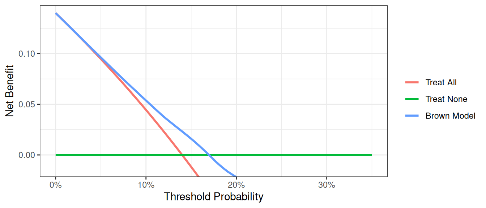
This decision curve suggests that although the model might be useful in the most risk averse patients, it is actually harmful in patients with more moderate threshold probabilities, that is, it has a net benefit lower than a reasonable clinical alternative. As such, the Brown et al. model should not be used in clinical practice. This effect, a model being harmful, occurs due to miscalibration, that is, when patients are given risks that are too high or too low. Note that miscalibration only occurs rarely when models are created and tested on the same data set, such as in the example where we created a model with both family history and the marker.
Joint and Conditional Test Approaches
In clinical practice, we often use different strategies to decide which patients to treat. Let’s examine two approaches:
- Joint Approach: Treat patients who are either high risk or have a marker prediction above a threshold.
- Conditional Approach: Treat high-risk patients immediately; for intermediate-risk patients, use the marker to decide; and don’t treat low-risk patients.
First, let’s set up the variables for these approaches:
R
# Create a variable for the strategy of treating only high risk patients
df_cancer_dx <-
df_cancer_dx %>%
mutate(
# This will be 1 for treat and 0 for don't treat
high_risk = ifelse(risk_group == "high", 1, 0),
# Treat based on Joint Approach
joint = ifelse(risk_group == "high" | cancerpredmarker > 0.15, 1, 0),
# Treat based on Conditional Approach
conditional =
ifelse(risk_group == "high" | (risk_group == "intermediate" & cancerpredmarker > 0.15), 1, 0)
)Stata
* Create a variable for the strategy of treating only high risk patients
* This will be 1 for treat and 0 for don't treat
g high_risk = risk_group=="high"
label var high_risk "Treat Only High Risk Group"
* Treat based on Joint Approach
g joint = risk_group =="high" | cancerpredmarker > 0.15
label var joint "Treat via Joint Approach"
* Treat based on Conditional Approach
g conditional = risk_group=="high" | ///
(risk_group == "intermediate" & cancerpredmarker > 0.15)
label var conditional "Treat via Conditional Approach"SAS
* Create a variable for the strategy of treating only high risk patients;
* This will be 1 for treat and 0 for don't treat;
DATA data_cancer;
SET data_cancer;
high_risk = (risk_group = "high");
LABEL high_risk="Treat Only High Risk Group";
* Treat based on joint approach;
joint = (risk_group="high") | (cancerpredmarker > 0.15);
LABEL joint = "Treat via Joint Approach";
* Treat based on conditional approach;
conditional = (risk_group = "high") | (risk_group = "intermediate" & cancerpredmarker > 0.15);
LABEL conditional = "Treat via Conditional Approach";
RUN;Python
df_cancer_dx["high_risk"] = np.where(df_cancer_dx["risk_group"] == "high", 1, 0)
df_cancer_dx["joint"] = np.where(
(df_cancer_dx["risk_group"] == "high") | (df_cancer_dx["cancerpredmarker"] > 0.15),
1,
0,
)
df_cancer_dx["conditional"] = np.where(
(df_cancer_dx["risk_group"] == "high")
| (
(df_cancer_dx["risk_group"] == "intermediate")
& (df_cancer_dx["cancerpredmarker"] > 0.15)
),
1,
0,
)Now, let’s compare the performance of these approaches using decision curve analysis:
R
dca(cancer ~ high_risk + joint + conditional,
data = df_cancer_dx,
thresholds = seq(0, 0.35, 0.01),
label = list(
high_risk = "High Risk",
joint = "Joint Test",
conditional = "Conditional Approach"
)
) %>%
plot(smooth = TRUE)Stata
dca cancer high_risk joint conditional, xstop(0.35) xlabel(0(0.05)0.35)SAS
%DCA(data = data_cancer, outcome = cancer,
predictors = high_risk joint conditional,
graph = yes, xstop = 0.35);Python
dca_joint_df = dca(
data=df_cancer_dx,
outcome="cancer",
modelnames=["high_risk", "joint", "conditional"],
thresholds=np.arange(0, 0.36, 0.01),
)
plot_graphs(
plot_df=dca_joint_df,
graph_type="net_benefit",
y_limits=[-0.05, 0.15],
color_names=["green", "cyan", "violet", "red", "gold"],
)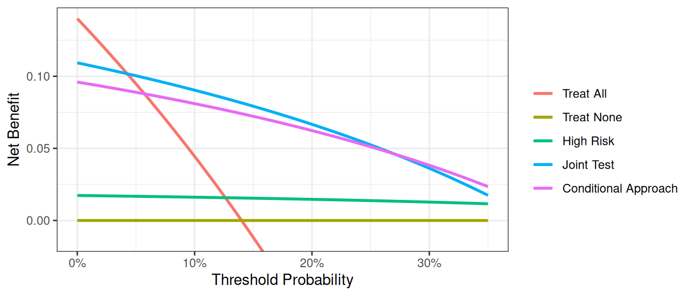
In general, the “joint” approach does better than the “conditional” approach, something which shouldn’t be surprising as we are measuring the cancer marker on everyone, not just those at intermediate risk, and so are getting more information. Clearly, however, we are not taking into account the downside of having to measure the marker on more patients, which is the whole justification for using the “conditional” approach. This issue is dealt with in the “incorporating harms” section of the tutorial.
Saving out Net Benefit Values
We can save out net benefit for a decision curve for further analysis or presentation in a table. We simply need to specify the name of the file we’d like it to be saved as. For a particular range of threshold probabilities, we would only need to specify what threshold to start, stop, and the increment we’d like to use. To assess or display the increase in net benefit we’d simply need to subtract the net benefit of the model based on treating all patients from the net benefit of our model.
Let us imagine that we want to view the net benefit of using only the marker to predict whether a patient has cancer, compared with the net benefits of biopsying all patients at thresholds of 5%, 10%, 15% … 35%.
For the model itself, we would actually need to first specify that the marker variable – unlike those of any of the models before – is not a probability. Based on our thresholds, we’d want to begin at 0.05, and by increments of 0.05, stop at 0.35. As we are not interested in the graph, we can also specify to suppress the graph from being displayed.
R
dca(cancer ~ marker,
data = df_cancer_dx,
as_probability = "marker",
thresholds = seq(0.05, 0.35, 0.15)
) %>%
as_tibble() %>%
select(label, threshold, net_benefit) %>%
gt::gt() %>%
gt::fmt_percent(columns = threshold, decimals = 0) %>%
gt::fmt(columns = net_benefit, fns = function(x) style_sigfig(x, digits = 3)) %>%
gt::cols_label(
label = "Strategy",
threshold = "Decision Threshold",
net_benefit = "Net Benefit"
) %>%
gt::cols_align("left", columns = label)Stata
* Run the decision curve and save out net benefit results
* Specifying xby(.05) since we'd want 5% increments
dca cancer marker, prob(no) xstart(0.05) xstop(0.35) xby(0.05) nograph ///
saving("DCA Output marker.dta", replace)
* Load the data set with the net benefit results
use "DCA Output marker.dta", clear
* Calculate difference between marker and treat all
* Our standard approach is to biopsy everyone so this tells us
* how much better we do with the marker
g advantage = marker - all
label var advantage "Increase in net benefit from using Marker model"SAS
* Run the decision curve and save out net benefit results, specify xby=0.05 since we want 5% increments;
%DCA(data = data_cancer, outcome = cancer, predictors = marker,
probability = no, xstart = 0.05,
xstop = 0.35, xby = 0.05, graph = no, out = dcamarker);
* Load the data set with the net benefit results;
DATA dcamarker;
SET dcamarker;
* Calculate difference between marker and treat all;
* Our standard approach is to biopsy everyone so this tells us how much better we do with the marker;
advantage = marker - all;
RUN;Python
dca_table_df = dca(
data=df_cancer_dx,
outcome="cancer",
modelnames=["marker"],
models_to_prob=["marker"],
thresholds=np.arange(0.05, 0.36, 0.15),
)
print("\n", dca_table_df[["model", "threshold", "net_benefit"]])| Strategy | Decision Threshold | Net Benefit |
|---|---|---|
| Treat All | 5% | 0.095 |
| Treat All | 20% | -0.075 |
| Treat All | 35% | -0.323 |
| Treat None | 5% | 0.000 |
| Treat None | 20% | 0.000 |
| Treat None | 35% | 0.000 |
| marker | 5% | 0.095 |
| marker | 20% | 0.029 |
| marker | 35% | 0.007 |
The saved table lists the range of threshold probability that we specified, followed by the net benefits of treating all, none, our specified model, intervention avoided (we discuss this below), and the newly created variable which represent the increase in net benefits of our model using only the marker.
Net benefit has a ready clinical interpretation. The value of 0.03 at a threshold probability of 20% can be interpreted as: “Comparing to conducting no biopsies, biopsying on the basis of the marker is the equivalent of a strategy that found 3 cancers per hundred patients without conducting any unnecessary biopsies.”
Interventions Avoided
In many cases, the default clinical strategy is to intervene on all patients, and thus the aim of a model or marker is to help reduce unnecessary interventions. In contrast to the traditional method, where net benefit is calculated in terms of the net increase in true positives compared to no treatment, we can also calculate net benefit in terms of a net decrease in false positives compared to the “treat all” strategy. In our cancer biopsy example, for instance, we might interested in whether we could reduce the number of biopsies. in the table that was saved out. To view decrease in interventions graphically, we would only need to specify it in our command.
R
dca(cancer ~ marker,
data = df_cancer_dx,
as_probability = "marker",
thresholds = seq(0.05, 0.35, 0.01),
label = list(marker = "Marker")
) %>%
net_intervention_avoided() %>%
plot(smooth = TRUE)Stata
* import data
import delimited "https://raw.githubusercontent.com/ddsjoberg/dca-tutorial/main/data/df_cancer_dx.csv", clear
label variable marker "Marker"
* net interventions avoided
dca cancer marker, prob(no) intervention xstart(0.05) xstop(0.35)SAS
%DCA(data = data_cancer, outcome = cancer, predictors = marker, probability = no,
intervention = yes, xstart = 0.05, xstop = 0.35);Python
dca_intervention_df = dca(
data=df_cancer_dx,
outcome="cancer",
modelnames=["marker"],
thresholds=np.arange(0.05, 0.36, 0.01),
models_to_prob=["marker"],
)
plot_graphs(
plot_df=dca_intervention_df,
graph_type="net_intervention_avoided",
smooth_frac=0.2,
color_names=["blue", "red", "green"],
)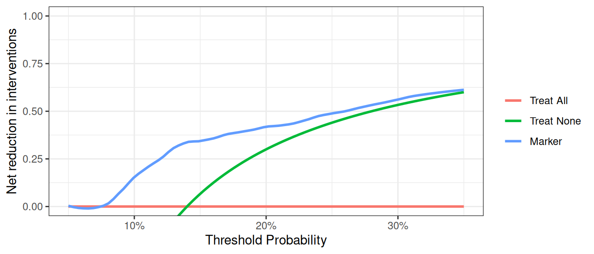
At a probability threshold of 10%, the net reduction in interventions is about 0.15. In other words, at this probability threshold, biopsying patients on the basis of the marker is the equivalent of a strategy that led to an absolute 15% reduction in the number of biopsies without missing any cancers. You can also report the net interventions avoided per 100 patients (or any number of patients).
Survival Outcomes
Motivating Example
Patients had a marker measured and were followed to determine whether they were eventually diagnosed with cancer, as well as the time to that diagnosis or censoring. We want to build a model of our own based on age, family history, and the marker, and assess how well the model predicts cancer diagnosis within 1.5 years.
Basic Data Set-up
We first need to import our data.
R
# import data
df_time_to_cancer_dx <-
readr::read_csv(
file = "https://raw.githubusercontent.com/ddsjoberg/dca-tutorial/main/data/df_time_to_cancer_dx.csv"
) %>%
# assign variable labels. these labels will be carried through in the `dca()` output
labelled::set_variable_labels(
patientid = "Patient ID",
cancer = "Cancer Diagnosis",
ttcancer = "Years to Diagnosis/Censor",
risk_group = "Risk Group",
age = "Patient Age",
famhistory = "Family History",
marker = "Marker",
cancerpredmarker = "Prediction Model",
cancer_cr = "Cancer Diagnosis Status"
)Stata
* import data
import delimited "https://raw.githubusercontent.com/ddsjoberg/dca-tutorial/main/data/df_time_to_cancer_dx.csv", clear
* assign variable labels. these labels will be carried through in the DCA output
label variable patientid "Patient ID"
label variable cancer "Cancer Diagnosis"
label variable ttcancer "Years to Diagnosis/Censor"
label variable risk_group "Risk Group"
label variable age "Patient Age"
label variable famhistory "Family History"
label variable marker "Marker"
label variable cancerpredmarker "Prediction Model"
label variable cancer_cr "Cancer Diagnosis Status"
* Declaring survival time data: follow-up time variable is ttcancer and the event is cancer
stset ttcancer, f(cancer)SAS
FILENAME ttcancer URL "https://raw.githubusercontent.com/ddsjoberg/dca-tutorial/main/data/df_time_to_cancer_dx.csv";
PROC IMPORT FILE = ttcancer OUT = work.data_ttcancer DBMS = CSV;
RUN;
DATA data_ttcancer;
SET data_ttcancer;
LABEL patientid = "Patient ID"
cancer = "Cancer Diagnosis"
ttcancer = "Years to Diagnosis/Censor"
risk_group = "Risk Group"
age = "Patient Age"
famhistory = "Family History"
marker = "Marker"
cancerpredmarker = "Prediction Model"
cancer_cr = "Cancer Diagnosis Status";
RUN;Python
df_time_to_cancer_dx = pd.read_csv(
"https://raw.githubusercontent.com/ddsjoberg/dca-tutorial/main/data/df_time_to_cancer_dx.csv"
)The survival probability to any time-point can be derived from any type of survival model; here we use a Cox as this is the most common model in statistical practice. You don’t necessarily need to know this to run a decision curve, but the formula for a survival probability from a Cox model is given by:
\[ S(t|X) = S_0(t)^{e^{X\beta}} \]
Where \(X\) is matrix of covariates in the Cox model, \(\beta\) is a vector containing the parameter estimates from the Cox model, and \(S_0(t)\) is the baseline survival probability to time t.
To run a decision curve analysis, we will create a Cox model with age, family history, and the marker, as predictors, save out the baseline survival function in a new variable, and obtaining the linear prediction from the model for each subject.
We then obtain the baseline survival probability to our time point of interest. If no patient was observed at the exact time of interest, we can use the baseline survival probability to the observed time closest to, but not after, the time point. We can then calculate the probability of failure at the specified time point. For our example, we will use a time point of 1.5, which would corresponds to the eighteen months that we are interested in.
R
# Load survival library
library(survival)
# Run the cox model
coxmod <- coxph(Surv(ttcancer, cancer) ~ age + famhistory + marker, data = df_time_to_cancer_dx)
df_time_to_cancer_dx <-
df_time_to_cancer_dx %>%
mutate(
pr_failure18 =
1 - summary(survfit(coxmod, newdata = df_time_to_cancer_dx), times = 1.5)$surv[1, ]
)Stata
* Run the cox model and save out baseline survival in the "surv_func" variable
stcox age famhistory marker, basesurv(surv_func)
* get linear predictor for calculation of risk
predict xb, xb
* Obtain baseline survival at 1.5 years = 18 months
sum surv_func if _t <= 1.5
* We want the survival closest to 1.5 years
* This will be the lowest survival rate for all survival times ≤1.5
local base = r(min)
* Convert to a probability
g pr_failure18 = 1 - `base'^exp(xb)
label var pr_failure18 "Probability of Failure at 18 months"SAS
* Run the Cox model;
PROC PHREG DATA=data_ttcancer;
MODEL ttcancer*cancer(0) = age famhistory marker;
BASELINE OUT=baseline COVARIATES=data_ttcancer SURVIVAL=surv_func / NOMEAN METHOD=pl;
RUN;
* the probability of failure at 1.5 years is calculated by subtracting the probability of survival from 1;
PROC SQL NOPRINT UNDO_POLICY=none;
CREATE TABLE base_surv2 AS
SELECT DISTINCT
patientid, age, famhistory, marker, 1-min(surv_func) AS pr_failure18
FROM baseline (WHERE=(ttcancer<=1.5))
GROUP BY patientid, age, famhistory, marker
;
* merge survival estimates with original data;
CREATE TABLE data_ttcancer AS
SELECT A.*, B.pr_failure18
FROM data_ttcancer A
LEFT JOIN base_surv2 B
ON (A.patientid=B.patientid) and (A.age=B.age) and
(A.famhistory=B.famhistory) and (A.marker=B.marker);
;
QUIT;
DATA data_ttcancer;
SET data_ttcancer;
LABEL pr_failure18 = "Probability of Failure at 18 months";
RUN;Python
cph = lifelines.CoxPHFitter()
cph.fit(
df=df_time_to_cancer_dx,
duration_col="ttcancer",
event_col="cancer",
formula="age + famhistory + marker",
)
cph_pred_vals = cph.predict_survival_function(
df_time_to_cancer_dx[["age", "famhistory", "marker"]], times=[1.5]
)
df_time_to_cancer_dx["pr_failure18"] = [1 - val for val in cph_pred_vals.iloc[0, :]]The code for running the decision curve analysis is straightforward after the probability of failure is calculated. All we have to do is specify the time point we are interested in. For our example, let us not only set the threshold from 0% to 50%, but also add smoothing.
R
dca(Surv(ttcancer, cancer) ~ pr_failure18,
data = df_time_to_cancer_dx,
time = 1.5,
thresholds = seq(0, 0.5, 0.01),
label = list(pr_failure18 = "Prediction Model")
) %>%
plot(smooth = TRUE)Stata
stdca pr_failure18, timepoint(1.5) xstop(0.5) smoothSAS
%STDCA(data = data_ttcancer, out = survivalmult,
outcome = cancer, ttoutcome = ttcancer,
timepoint = 1.5, predictors = pr_failure18, xstop = 0.5);Python
stdca_coxph_results = dca(
data=df_time_to_cancer_dx,
outcome="cancer",
modelnames=["pr_failure18"],
thresholds=np.arange(0, 0.51, 0.01),
time=1.5,
time_to_outcome_col="ttcancer",
)
plot_graphs(
plot_df=stdca_coxph_results,
graph_type="net_benefit",
y_limits=[-0.05, 0.25],
smooth_frac=0.5,
color_names=["blue", "red", "green"],
)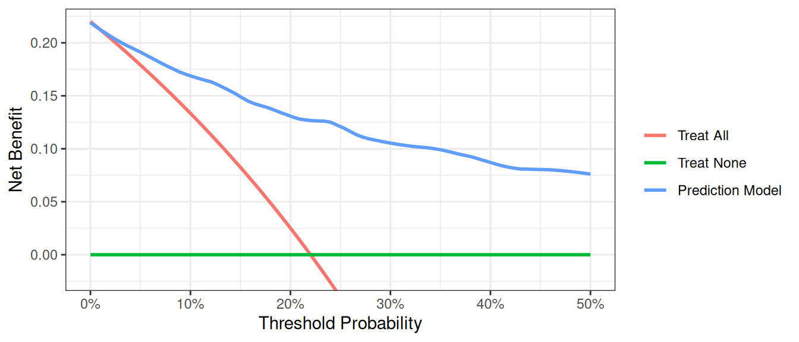
This shows that using the model to inform clinical decisions will lead to superior outcomes for any decision associated with a threshold probability of above 2% or so.
Competing Risks
At times, data sets are subject to competing risks. For example in our cancer data set, patients may have died prior to cancer diagnosis. To run a competing risk analysis, we first create a failure variable that indicates which patients died before a cancer diagnosis and then run a survival time decision curve analysis.
R
# status variable must be a factor with first level coded as 'censor',
# and the second level the outcome of interest.
df_time_to_cancer_dx <-
df_time_to_cancer_dx %>%
mutate(
cancer_cr =
factor(cancer_cr,
levels = c("censor", "diagnosed with cancer", "dead other causes")
)
)
dca(Surv(ttcancer, cancer_cr) ~ pr_failure18,
data = df_time_to_cancer_dx,
time = 1.5,
thresholds = seq(0, 0.5, 0.01),
label = list(pr_failure18 = "Prediction Model")
) %>%
plot(smooth = TRUE)Stata
* Define the competing events status variable
g status = 0 if cancer_cr == "censor"
replace status = 1 if cancer_cr == "dead other causes"
replace status = 2 if cancer_cr == "diagnosed with cancer"
* We declare our survival data with the new event variable
stset ttcancer, f(status=1)
* Run the decision curve specifying the competing risk option
stdca pr_failure18, timepoint(1.5) compet1(2) smooth xstop(.5)SAS
* Define the competing events status variable;
DATA data_ttcancer;
SET data_ttcancer;
status = 0;
IF cancer_cr = "diagnosed with cancer" THEN status=1;
ELSE IF cancer_cr = "dead other causes" THEN status=2;
RUN;
* Run the decision curve specifying the competing risk option;
%STDCA(data = data_ttcancer, outcome = status,
ttoutcome = ttcancer, timepoint = 1.5,
predictors = pr_failure18, competerisk = yes, xstop = 0.5);Python
# Python library doesn't support competing risks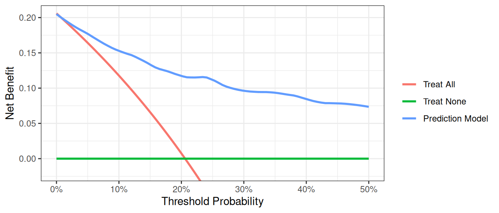
Case-Control Designs
An issue with applying decision curve analysis to case-control data is that net benefit depends on prevalence, and prevalence in case-control studies is fixed by design. When working with case-control data, you can pass the population prevalence to accurately calculate the net benefit.
R
# import data
df_cancer_dx_case_control <-
readr::read_csv(
file = "https://raw.githubusercontent.com/ddsjoberg/dca-tutorial/main/data/df_cancer_dx_case_control.csv"
) %>%
# assign variable labels. these labels will be carried through in the `dca()` output
labelled::set_variable_labels(
patientid = "Patient ID",
casecontrol = "Case-Control Status",
risk_group = "Risk Group",
age = "Patient Age",
famhistory = "Family History",
marker = "Marker",
cancerpredmarker = "Prediction Model"
)
# summarize data
df_cancer_dx_case_control %>%
select(-patientid) %>%
tbl_summary(
by = casecontrol,
type = all_dichotomous() ~ "categorical"
) %>%
modify_spanning_header(all_stat_cols() ~ "**Case-Control Status**")Stata
* import data
import delimited "https://raw.githubusercontent.com/ddsjoberg/dca-tutorial/main/data/df_cancer_dx_case_control.csv", clear
label variable patientid "Patient ID"
label variable casecontrol "Case-Control Status"
label variable risk_group "Risk Group"
label variable age "Patient Age"
label variable famhistory "Family History"
label variable marker "Marker"
label variable cancerpredmarker "Probability of Cancer Diagnosis"SAS
FILENAME case_con URL "https://raw.githubusercontent.com/ddsjoberg/dca-tutorial/main/data/df_cancer_dx_case_control.csv";
PROC IMPORT FILE = case_con OUT = work.data_case_control DBMS = CSV;
RUN;
DATA data_case_control;
SET data_case_control;
LABEL patientid = "Patient ID"
casecontrol = "Case-Control Status"
risk_group = "Risk Group"
age = "Patient Age"
famhistory = "Family History"
marker = "Marker"
cancerpredmarker = "Probability of Cancer Diagnosis";
RUN;Python
df_case_control = pd.read_csv(
"https://raw.githubusercontent.com/ddsjoberg/dca-tutorial/main/data/df_cancer_dx_case_control.csv"
)
# Summarize Data With Column Medians
# drop 'patientid', then group and take medians of numeric columns only
medians = (
df_case_control.drop(columns="patientid")
.groupby("casecontrol")
.median(numeric_only=True)
)
print(medians)| Characteristic |
Case-Control Status
|
|
|---|---|---|
| 0 N = 3301 |
1 N = 4201 |
|
| Risk Group | ||
| high | 5 (1.5%) | 16 (3.8%) |
| intermediate | 120 (36%) | 215 (51%) |
| low | 205 (62%) | 189 (45%) |
| Patient Age | 64.0 (60.9, 67.0) | 65.8 (61.9, 69.1) |
| Family History | ||
| 0 | 292 (88%) | 343 (82%) |
| 1 | 38 (12%) | 77 (18%) |
| Marker | 0.58 (0.26, 1.11) | 0.71 (0.32, 1.57) |
| Prediction Model | 0.04 (0.02, 0.11) | 0.09 (0.03, 0.27) |
| 1 n (%); Median (Q1, Q3) | ||
In the example below, the population prevalence is 20%.
R
dca(casecontrol ~ cancerpredmarker,
data = df_cancer_dx_case_control,
prevalence = 0.20,
thresholds = seq(0, 0.5, 0.01)
) %>%
plot(smooth = TRUE)Stata
dca casecontrol cancerpredmarker, prevalence(0.20) xstop(0.50)SAS
%DCA(data = data_case_control, outcome = casecontrol,
predictors = cancerpredmarker, prevalence = 0.20);Python
dca_case_control_df = dca(
data=df_case_control,
outcome="casecontrol",
modelnames=["cancerpredmarker"],
prevalence=0.20,
thresholds=np.arange(0, 0.51, 0.01),
)
plot_graphs(
plot_df=dca_case_control_df,
graph_type="net_benefit",
y_limits=[-0.05, 0.25],
smooth_frac=0.1,
)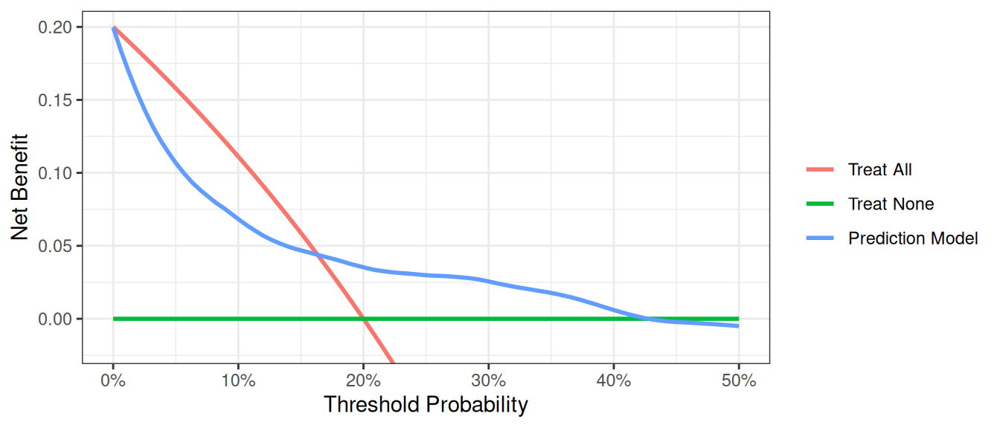
The interpretation of the decision curve analysis figure is the same as for a cohort study. In this example, the model performs worse than a biopsy all strategy from threshold 0% to 17%, and the model has benefit from 18% to 40%. As the model does not have the highest net benefit across the full range of reasonable threshold probabilities, it is not justified to use it in practice.
Incorporating Harms
To incorporate the harm associated with obtaining the marker, we ask a clinician, who tells us that, even if the marker were perfectly accurate, few clinicians would conduct more than 30 tests to predict one cancer diagnosis. This might be because the test is expensive, or requires some invasive procedure to obtain. The “harm” of measuring the marker is the reciprocal of 30, or 0.0333.
R
# Run the decision curve incorporating simple harm of marker measurement
dca(cancer ~ marker,
data = df_cancer_dx,
thresholds = seq(0, 0.35, 0.01),
as_probability = "marker",
harm = list(marker = 0.0333)
) %>%
plot(smooth = TRUE)Stata
dca cancer marker, probability(no) harm(0.0333) xstop(0.35) xlabel(0(0.05)0.35)SAS
%DCA(data = data_cancer, outcome = cancer,
predictors = marker,
probability=no,
harm = 0.0333,
graph = yes, xstop = 0.35);Python
dca_harm_simple_df = dca(
data=df_cancer_dx,
outcome="cancer",
modelnames=["marker"],
thresholds=np.arange(0, 0.36, 0.01),
harm={"marker": 0.0333},
models_to_prob=["marker"],
)
plot_graphs(
plot_df=dca_harm_simple_df,
graph_type="net_benefit",
y_limits=[-0.05, 0.15],
color_names=["blue", "red", "green"],
smooth_frac=0.2,
)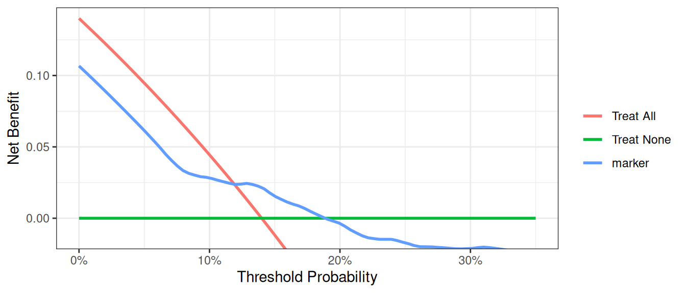
This shows the net benefit of the model is no longer superior across the full range of reasonable threshold probabilities. Hence the benefit of using the model does not outweigh the harm of having to collect the marker needed by the model.
Many decisions in medicine are based on conditional test results, however. A classic example is where patients are categorized on the basis of a test as being at high, low or intermediate risk. Patients at high risk are referred immediately for treatment (in our example biopsied); patients at low risk are reassured and advised that no further action is necessary; patients at intermediate risk are sent for an additional test, with subsequent treatment decisions made accordingly.
We have to calculate harm specially for the conditional test, because only patients at intermediate risk are measured for the marker. Then incorporate it into our decision curve. The strategy for incorporating harm for the conditional test is by multiplying the proportion scanned by the harm of the scan.
R
# the harm of measuring the marker is stored in a scalar
harm_marker <- 0.0333
# in the conditional test, only patients at intermediate risk
# have their marker measured
# harm of the conditional approach is proportion of patients who have the marker
# measured multiplied by the harm
harm_conditional <- mean(df_cancer_dx$risk_group == "intermediate") * harm_marker
# Run the decision curve
dca(cancer ~ risk_group,
data = df_cancer_dx,
thresholds = seq(0, 0.35, 0.01),
as_probability = "risk_group",
harm = list(risk_group = harm_conditional)
) %>%
plot(smooth = TRUE)Stata
* the harm of measuring the marker is stored in a local
local harm_marker = 0.0333
* in the conditional test, only patients at intermediate risk have their marker measured
g intermediate_risk = (risk_group=="intermediate")
* harm of the conditional approach is proportion of patients who have the marker measured multiplied by the harm of measuring
sum intermediate_risk
local harm_conditional = r(mean)*`harm_marker'
*convert risk group to a numerical variable to use in the decision curve analysis
encode (risk_group), g(risk_category)
* Run the decision curve
dca cancer risk_category, ///
probability(no) harm(`harm_conditional') xstop(0.35) xlabel(0(0.05)0.35)SAS
* the harm of measuring the marker is stored as a macro variable;
%LET harm_marker = 0.0333;
*in the conditional test, only patients at intermediate risk have their marker measured;
DATA data_cancer;
SET data_cancer;
intermediate_risk = (risk_group = "intermediate");
RUN;
* calculate the proportion of patients who have the marker and save out mean risk;
PROC MEANS DATA = data_cancer;
VAR intermediate_risk;
OUTPUT OUT = meanrisk MEAN = meanrisk;
RUN;
DATA _NULL_;
SET meanrisk;
CALL SYMPUT("meanrisk", meanrisk);
RUN;
* harm of the conditional approach is proportion of patients who have the marker measured multiplied by the harm;
%LET harm_conditional = %SYSEVALF(&meanrisk.*&harm_marker.);
* Run the decision curve;
%DCA(data = data_cancer, outcome = cancer, predictors = risk_group,
probability=no,
harm = &harm_conditional., xstop = 0.35);Python
harm_marker = 0.0333
harm_conditional = (df_cancer_dx["risk_group"] == "intermediate").mean() * harm_marker
dca_harm_df = dca(
data=df_cancer_dx,
outcome="cancer",
modelnames=["risk_group"],
models_to_prob=["risk_group"],
thresholds=np.arange(0, 0.36, 0.01),
harm={"risk_group": harm_conditional},
)
plot_graphs(
plot_df=dca_harm_df,
y_limits=[-0.05, 0.15],
color_names=["blue", "red", "green"],
smooth_frac=0.2,
)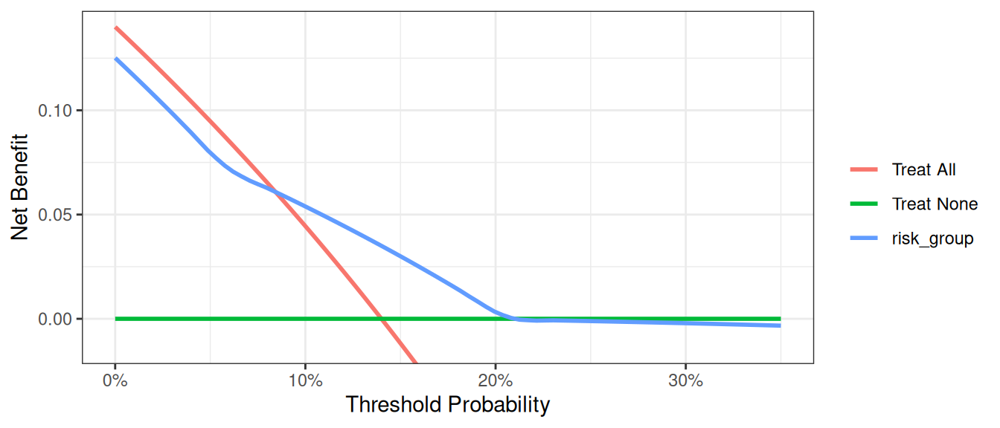
Correction for Overfit
As is well known, evaluating a model on the same data set that was used to generate the model will give overoptimistic estimates of model performance. One way to correct for this sort of overfit is by using 10-fold cross validation. The key steps are as follows:
- Randomly divide the data set into 10 groups of equal size, with equal numbers of events in each group.
- Fit the model using all but the first group.
- Apply the model created from all observations other than those in the first group (in step 2), to the first group to obtain the predicted probability of the event.
- Repeat steps (2) and (3) leaving out and then applying the fitted model for each of the groups. Every subject now has a predicted probability of the event derived from a model that was generated from a data set that did not include that subject.
- Using the predicted probabilities, compute the net benefit at various threshold probabilities.
- One approach is to repeat this process many times and take an average (repeated 10-fold cross validation). Although this is not always done, we will include code for it here. Repeat steps (1) to (5) 200 times. The corrected net benefit for each threshold probability is the mean across the 200 replications.
R
# set seed for random process
set.seed(112358)
formula <- cancer ~ marker + age + famhistory
dca_thresholds <- seq(0, 0.36, 0.01)
# create a 10-fold cross validation set, 1 repeat which is the base case, change to suit your use case
cross_validation_samples <- rsample::vfold_cv(df_cancer_dx, v = 10, repeats = 1)
df_crossval_predictions <-
cross_validation_samples %>%
# for each cut of the data, build logistic regression on the 90% (analysis set)
rowwise() %>%
mutate(
# build regression model on analysis set
glm_analysis =
glm(
formula = formula,
data = rsample::analysis(splits),
family = binomial
) %>%
list(),
# get predictions for assessment set
df_assessment =
broom::augment(
glm_analysis,
newdata = rsample::assessment(splits),
type.predict = "response"
) %>%
list()
) %>%
ungroup() %>%
# pool results from the 10-fold cross validation
pull(df_assessment) %>%
bind_rows() %>% # Concatenate all cross validation predictions
group_by(patientid) %>%
summarise(cv_pred = mean(.fitted), .groups = "drop") %>% # Generate mean prediction per patient
ungroup()
df_cv_pred <-
df_cancer_dx %>%
left_join(
df_crossval_predictions,
by = "patientid"
)
dcurves::dca( # calculate net benefit scores on mean cross validation predictions
data = df_cv_pred,
formula = cancer ~ cv_pred,
thresholds = dca_thresholds,
label = list(
cv_pred = "Cross-validated Prediction Model"
)
)$dca |>
# plot cross validated net benefit values
ggplot(aes(x = threshold, y = net_benefit, color = label)) +
stat_smooth(method = "loess", se = FALSE, formula = "y ~ x", span = 0.2) +
coord_cartesian(ylim = c(-0.014, 0.14)) +
scale_x_continuous(labels = scales::percent_format(accuracy = 1)) +
labs(x = "Threshold Probability", y = "Net Benefit", color = "") +
theme_bw()Stata
* Load Original Dataset
import delimited "https://raw.githubusercontent.com/ddsjoberg/dca-tutorial/main/data/df_cancer_dx.csv", clear
* Start by specifying whether cross validation will be done once or multiple times
* The global variable cv specifies the number of repeated crossvalidations.
* Set global cv to 1 for a single crossvalidation, but, say, 25 for multiple crossvalidation
global cv=25
forvalues i=1(1)$cv {
* Local macros to store the names of model.
local prediction1 = "model"
* Create variables to later store probabilities from each prediction model
quietly g `prediction1'=.
* Create a variable to be used to `randomize' the patients.
quietly g u = uniform()
* Sort by the event to ensure equal number of patients with the event are in each
* group
sort cancer u
* Assign each patient into one of ten groups
g group = mod(_n, 10) + 1
* Loop through to run through for each of the ten groups
forvalues j=1(1)10 {
* First for the "base" model:
* Fit the model excluding the jth group.
quietly logit cancer age famhistory marker if group!=`j'
* Predict the probability of the jth group.
quietly predict ptemp if group==`j'
* Store the predicted probabilities of the jth group (that was not used in
* creating the model) into the variable previously created
quietly replace `prediction1' = ptemp if group==`j'
* Dropping the temporary variable that held predicted probabilities for all
* patients
drop ptemp
}
* Creating a temporary file to store the results of each of the iterations of our
* decision curve for the multiple the 10 fold cross validation
* This step may omitted if the optional forvalues loop was excluded.
tempfile dca`i'
* Run decision curve, and save the results to the tempfile.
* For those excluding the optional multiple cross validation, this decision curve
* (to be seen by excluding "nograph") and the results (saved under the name of your
* choosing) would be the decision curve corrected for overfit.
quietly dca cancer `prediction1', xstop(.5) nograph ///
saving("`dca`i''")
drop u group `prediction1'
} // This closing bracket ends the initial loop for the multiple cross validation.
* It is also necessary for those who avoided the multiple cross validation
* by changing the value of the forvalues loop from 200 to 1*/
* The following is only used for the multiple 10 fold cross validations.
use "`dca1'", clear
forvalues i=2(1)$cv {
* Append all values of the multiple cross validations into the first file
append using "`dca`i''"
}
* Calculate the average net benefit across all iterations of the multiple
* cross validation
collapse all none model model_i, by(threshold)
save "Cross Validation DCA Output.dta", replace
* Labeling the variables so that the legend will have the proper labels
label var all "Treat All"
label var none "Treat None"
label var model "Cross-validated Prediction Model"
* Plotting the figure of all the net benefits.
twoway (line all threshold if all>-0.05, sort) || (line none model threshold, sort)SAS
%MACRO CROSSVAL(data=, /*Name of input dataset*/
out=, /*Name of output dataset containing calculated net benefit*/
outcome=, /*outcome variable, 1=event, 0=nonevent*/
predictors=, /*Covariates in the model*/
v = 10, /*number of folds in the cross validation*/
repeats = 200, /*Number of repeated cross validations that will be run*/
/*arguments passed to %DCA() */
xstart=0.01, xstop=0.99, xby=0.01, harm=);
%DO x = 1 %TO &repeats.;
*Load original data and create a variable to be used to 'randomize' patients;
DATA CROSSVAL_dca_of;
SET &data.;
u = RAND("Uniform");
RUN;
*Sort by the event to ensure equal number of patients with the event are in each group;
PROC SORT DATA = CROSSVAL_dca_of;
BY &outcome. u;
RUN;
*Assign each patient into one of ten groups;
DATA CROSSVAL_dca_of;
SET CROSSVAL_dca_of;
group = MOD(_n_, &v.) + 1;
RUN;
*Loop through to run through for each of the ten groups;
%DO y = 1 %TO &v.;
* First, fit the model excluding the yth group.;
PROC LOGISTIC DATA = CROSSVAL_dca_of OUTMODEL = CROSSVAL_df_model&y. DESCENDING NOPRINT;
MODEL &outcome. = &predictors.;
WHERE group ne &y.;
RUN;
*Put yth group into base test dataset;
DATA CROSSVAL_df_test&y.;
SET CROSSVAL_dca_of;
WHERE group = &y.;
RUN;
*Apply the model to the yth group and save the predicted probabilities of the yth group (that was not used in creating the model);
PROC LOGISTIC INMODEL=CROSSVAL_df_model&y. NOPRINT;
SCORE DATA = CROSSVAL_df_test&y. OUT = CROSSVAL_model_pr&y.;
RUN;
%END;
* Combine model predictions for all 10 groups;
DATA CROSSVAL_model_pr(RENAME = (P_1=model_pred));
SET CROSSVAL_model_pr1-CROSSVAL_model_pr&v.;
RUN;
* Run decision curve and save out results;
* For those excluding the optional multiple cross validation, this decision curve (to be seen by using "graph=yes") and the results (saved under the name of your choosing) would be the decision curve corrected for overfit;
%DCA(data=CROSSVAL_model_pr, out=CROSSVAL_dca&x., outcome=&outcome., predictors=model_pred,
graph=no, xstart=&xstart., xstop=&xstop., xby=&xby., harm=&harm.);
*This "%END" statement ends the initial loop for the multiple cross validation. It is also necessary for those who avoided the multiple cross validation by changing the value in the DO loop from 200 to 1;
%END;
DATA CROSSVAL_allcv_pr;
SET CROSSVAL_dca1-CROSSVAL_dca&repeats.;
RUN;
* Calculate the average net benefit across all iterations of the multiple cross validation;
PROC MEANS DATA=CROSSVAL_allcv_pr NOPRINT;
CLASS threshold;
VAR all none model_pred;
OUTPUT OUT=CROSSVAL_minfinal MEAN=all none model_pred;
RUN;
* Save out average net benefit and label variables so that the plot legend will have the proper labels.;
DATA &out. (KEEP=model_pred all none threshold);
SET CROSSVAL_minfinal;
LABEL all="Treat All";
LABEL none="Treat None";
LABEL model_pred="Cross-validated Prediction Model";
RUN;
PROC DATASETS LIB=WORK;
DELETE CROSSVAL_:;
RUN;
QUIT;
%MEND CROSSVAL;
* Run the crossvalidation macro;
%CROSSVAL(data = data_cancer,
out = allcv_pr,
outcome = cancer,
predictors= age famhistory marker,
xstop = 0.5);
* Plotting the figure of all the net benefits;
PROC GPLOT DATA=allcv_pr;
axis1 ORDER=(-0.05 to 0.15 by 0.05) LABEL=(ANGLE=90 "Net Benefit") MINOR=none;
axis2 ORDER=(0 to 0.5 by 0.1) LABEL=("Threshold Probability") MINOR=none;
legend LABEL=NONE ACROSS=1 CBORDER=BLACK;
PLOT all*threshold
none*threshold
model_pred*threshold /
VAXIS=axis1
HAXIS=axis2
LEGEND=legend OVERLAY;
SYMBOL INTERPOL=JOIN;
RUN;
QUIT;Python
# Load dependencies for cross validation
import random # Library to generate random seed
from sklearn.model_selection import (
RepeatedKFold,
) # Cross validation data selection and segregation function
# Set seed for random processes
random.seed(112358)
# Load simulation data
df_cancer_dx = pd.read_csv(
"https://raw.githubusercontent.com/ddsjoberg/dca-tutorial/main/data/df_cancer_dx.csv"
)
# Define the formula (make sure the column names in your DataFrame match these)
formula = "cancer ~ marker + age + famhistory"
# Create cross-validation object
rkf = RepeatedKFold(n_splits=10, n_repeats=1, random_state=112358)
# Placeholder for predictions
cv_predictions = []
# Perform cross-validation
for train_index, test_index in rkf.split(df_cancer_dx):
# Split data into training and test sets
train = df_cancer_dx.iloc[train_index]
test = df_cancer_dx.iloc[test_index].copy() # ← make an explicit copy
# Fit the model
model = sm.Logit.from_formula(formula, data=train).fit(disp=0)
# Make predictions on the test set
test["cv_prediction"] = model.predict(test)
# Store predictions
cv_predictions.append(test[["patientid", "cv_prediction"]])
# Concatenate predictions from all folds
df_predictions = pd.concat(cv_predictions)
# Calculate mean prediction per patient
df_mean_predictions = (
df_predictions.groupby("patientid")["cv_prediction"].mean().reset_index()
)
# Join with original data
df_cv_pred = pd.merge(df_cancer_dx, df_mean_predictions, on="patientid", how="left")
# Decision curve analysis
df_dca_cv = dca(
data=df_cv_pred,
modelnames=["cv_prediction"],
outcome="cancer",
thresholds=np.arange(0, 0.36, 0.01),
)
# Plot DCA curves
plot_graphs(
plot_df=df_dca_cv,
graph_type="net_benefit",
y_limits=[-0.01, 0.15],
color_names=["blue", "red", "green"],
smooth_frac=0.2,
)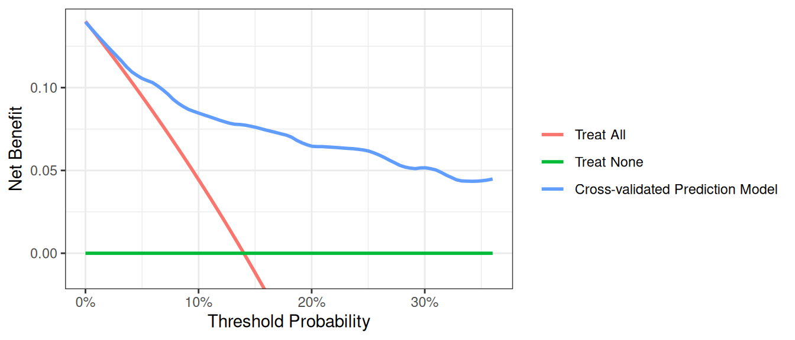
Note: Predicted probabilities for each subject can be used to calculate other performance metrics, such as discrimination.
One More Thing
Before running a decision curve analysis, please do read Seven Common Errors in Decision Curve Analysis